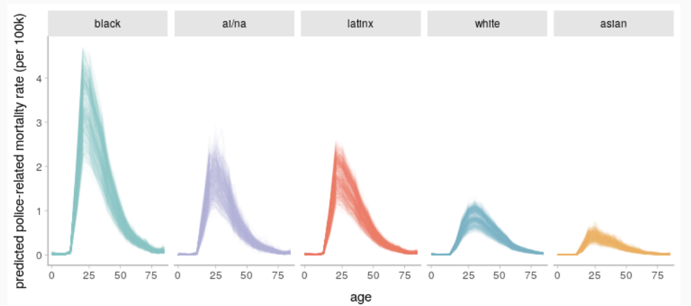
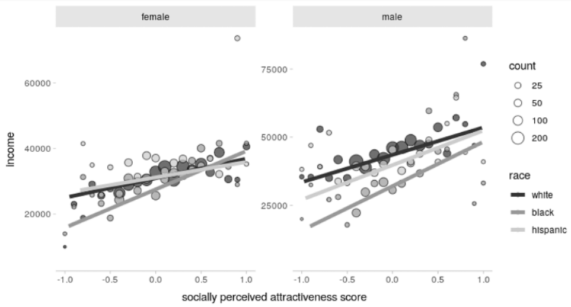
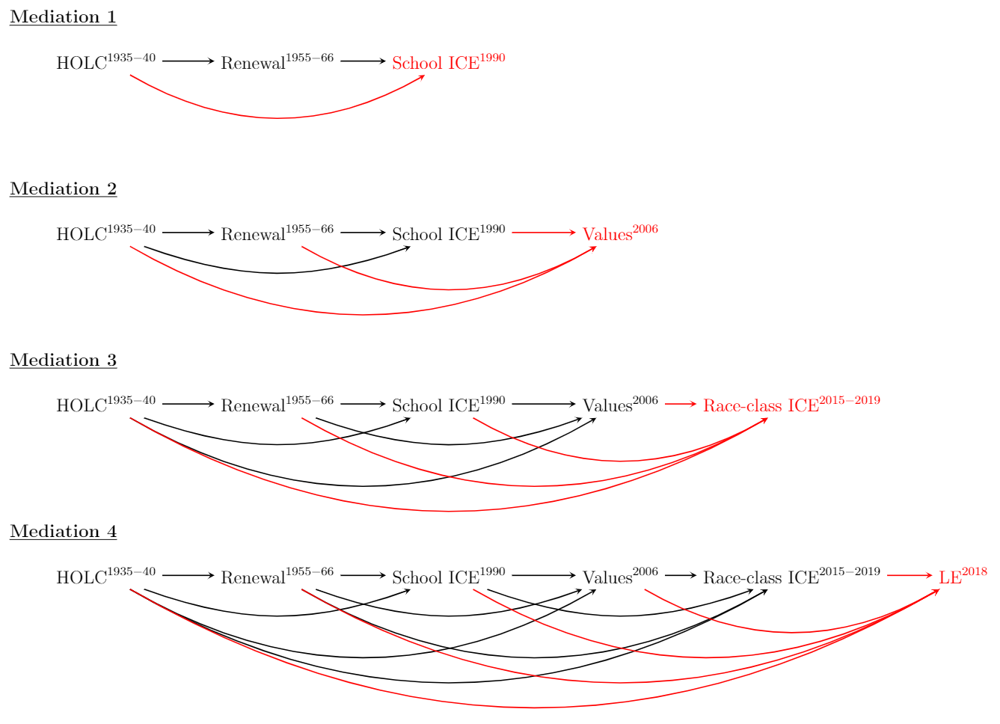

Associate Professor
University of Minnesota
Prior to joining the University of Minnesota in 2023, I served as an Assistant Professor at Washington University in St. Louis (2021-2023) and as a Postdoctoral Fellow at the University of Michigan (2018-2021). I completed my PhD in Sociology, with a concentration in Social Statistics, at the University of Washington (2018), where I also received a certificate in Demographic Methods.
In my research, I focus on conceptualizing and empirically demonstrating how power imbalance between social groups is a reservoir that produces and refortifies health inequalities over time. Indeed, I theorize health inequality as a specific manifestation of a more general social process -- i.e., how unbalanced social power enables some groups to monopolize health-relevant resources while also redirecting hazards onto others -- and produce quantitative evidence of this dynamic using the persistent racial and class-based health inequalities observed in the U.S. as cases in point. More directly, my work centers on a stylized question: How is it that Black and working-class Americans have, at almost any moment in the century or so we've monitored population health, borne a disproportionate share of illness and premature death relative to their White, professional-class peers? More often than not, the answer traces back to some practice, policy, or institution in a contemporaneous or preceding period made possible by a distribution of power tilted along the lines of race and class.
I generally contribute to this area in three ways:


